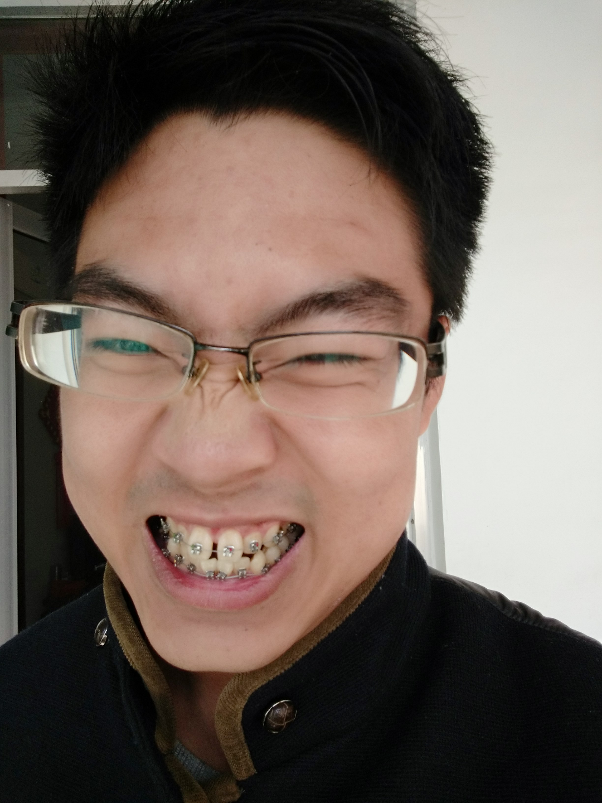
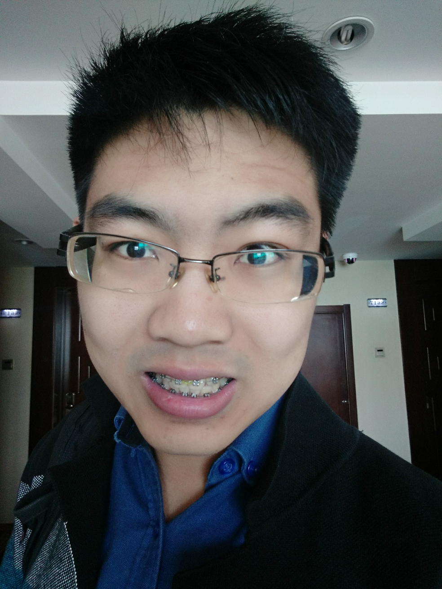
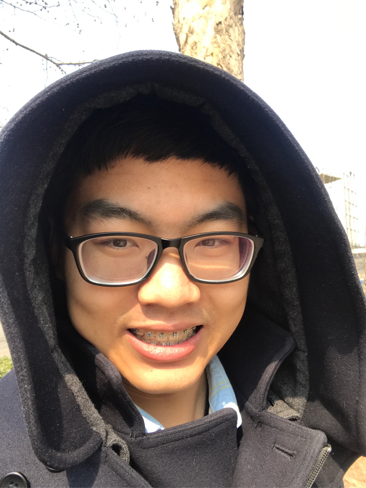
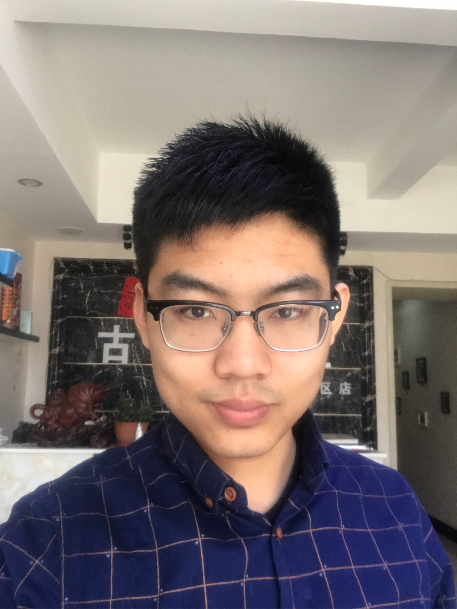

名字:
Colin Yan
性别:男
介绍:Time will tell，time will kill.
问题
答案
新建于:2015-10-29 11:46:28 PM，更新于2017-03-26 01:17:02 AM
Pre上一页
Next下一页
跳页:
正文: ee3今天是2015年10月29号，我昨天去佩戴了矫治器。
我的生日是1991年2月7号。
按照我们这边农村的说法，我25了，应该可以答这题。
嗯，我乳牙还是挺整齐的，可是换了牙以后，就完犊子了。上边的两颗门牙是龅牙，中间还有个缝儿(눈_눈)。这是从我妈妈遗传来的，我妈妈是从我姥姥那边遗传来的，木有办法╮（╯＿╰）╭。
记得初中的时候曾经去牙科看过，但是当时有个牙医说，看我牙的长势，嗯，应该会往好里发展，就是说，会慢慢长得越来越整齐！
哎呀妈呀，不用拔牙了，不用戴牙套啦！这给我高兴的！
然后过了十几年～～～～～～～越来越龅。
我又老老实实滚来戴矫治器了。
至于动机～当然是想努力再抢救一下我的颜值ಥ_ಥ。尤其是在被知乎“一切都看脸”定理荼毒以后，我就更坚定了要整牙的信念（我才不会说是被某人拒绝了以后有点心生自卑呢哼）。
不过，让我最后下定决心的是一个朋友跟我说的一句话。她也是大学毕业后才整牙的，我问她感觉怎么样。她说带牙套很不舒服，感觉特别扭，各种不方便。那我问她是怎么下定决心的呢？
她说：“如果我现在做了，可能需要两年，甚至三年才会有效果。可是如果我没做，那在两年或者三年以后，我肯定会后悔，当初我为什么没有做。”
我靠好特么有道理！
我立刻就决定做了！
然后，
现在感觉有点生无可恋。
啊啊啊啊啊啊啊好难受啊ಥ_ಥ
我带的是国产的那种什么热熔丝的。矫治器贴在牙上还是挺厚的，各种磨嘴唇啊ಥ_ಥ
我本来牙齿就凸嘛～戴上以后感觉嘴唇有点合不上了ಥ_ಥ
现在还处于什么都不能吃的状态，从昨天开始已经吃了四顿面条了ಥ_ಥ
其实并不是不能吃，而是吃起来特别麻烦特别慢，牙齿还酸酸的不舒服ಥ_ಥ
而且吃完感觉各种塞牙啊！吃什么都会挂一嘴～就只能拼命的漱口刷牙漱口刷牙～吃完饭半个小时净干这个了。希望电动牙刷赶紧到货帮我减轻负担ಥ_ಥ
现在已经开始怀念当年大吃大喝的日子，现在晚上想吃点东西喝个牛奶还要跟自己斗争半天ಥ_ಥ
如果有人生遥控器的话我肯定毫不犹豫快进两年半，啊不，保险点儿还是快进三年吧！
可是现在只能阿弥陀佛希望自己赶紧适应这一切～
啊不说了我感觉要饿死了，我决定还是吃点东西然后滚起来刷牙ಥ_ಥ
～～～～～～分～～割～～线～～～～～～～～～～～～～～～～～～～～～～～～～
现在是10月30号，距离戴上牙套两天了，我已经感觉吃东西已经不怎么太难受了～～所以大家不要害怕哟！
为了方便给大家看看戴的牙套是哪一种，决定给大家上个图。但是，咳咳，请注意保护好自己的眼睛。
前方高能预警！！
前方高能预警！！
前方高能预警！！

啊！我成功伤害到了大家的眼睛！
好爽ԅ(¯ㅂ¯ԅ)
～～～～～～～再分割一下～～～～～～
10月31号 说一下拔牙的问题。
答主一颗牙都没有拔。
本来是要拔一颗长歪了的智齿，结果拍CT看了看，牙医说牙根紧挨着下牙槽神经管（好像是这么叫的），就没敢拔。现在的计划是先正畸，半年后等智齿萌发一下，牙根离神经远了就拔掉他～
～～～～～～老老实实的分割线～～～～～～～～～～～～～～～～～～～～～～～～
12月3号
5天之前复诊来着，今天来更一下。
这一个月感觉还可以～我在内蒙出差了一个月，羊肉反正也没少吃(´｡✪ω✪｡｀)
不过，有一天，我正在拜访客户呢，突然感觉我下牙偏右的第四颗牙齿（5号牙）似乎有些异样。我不着痕迹的舔了一下，它上面粘的那个托槽～就掉下来了～
坑爹呢这是！(ノ=Д=)ノ┻━┻
那玩意虽然没有完全脱落，可是挂在钢丝上滴溜荡啷的也不得劲儿啊～我尽量的装作什么事都没有发生的样子跟客户沟（zhuang）通（bi），可是舌头还是隔几分钟就忍不住舔一下啊舔一下～
我觉得不行了，得赶紧粘上，不然没法高冷的工（zhuang）作（bi）了。
我就某度地图里搜了附近的牙科诊所，提前打了电话，好几家都说不好粘。终于确定有一个地方能粘，但是粘一个要60块，我就打的去了。
那个年轻的牙医，给我捣鼓了一个多小时，期间各种费劲，我还拨通了我自己的牙医的电话让他俩进行了专业的沟通。
好不容易粘上，我就开心的回去吃饭了。
吃着吃着，突然就嘎嘣一声～咬到了一个坚硬的东西。
是的，那个托槽又掉下来了，而且这次是彻底脱落了。
去他大爷的坑爹医生啊～(ノ=Д=)ノ┻━┻
不过人生地不熟的还是不要回去找他了。
我赶紧给我的牙医又打了个电话，他淡定的告诉我没事，把托槽保存好就行了。
我默默的把托槽洗干净，然后找个纸包了起来。
到了月底，也就是五天前，周日，我回家了。
我起了个早去我的牙科诊所那边排队。排了大概有一个半小时。
连粘托槽带调整力度，花了十分钟。
而且粘得挺结实。
中间我的牙医各种吐槽那个给我粘托槽的牙医：
1、“你看看，这不就粘上了！”用工具顶了顶刚粘上的托槽，自豪状“这是相当的结实啊！怎么可能粘不上！”
2、“他还给你磨了牙啊？”
“啊？(#ﾟДﾟ)我刚粘上的时候是有点不得劲，他给我磨了磨，我以为是磨了托槽！！”
“嗯，他确实是给你磨了牙，而且手艺还不错～”
“真的？”
“是啊”一脸严肃“这牙尖儿都给磨成锯齿状了，明显是磨得时候手在抖啊！”
“ಥ_ಥ”
“没事儿，我再给你修修～～～”
3、
最后总结了一句～
“你不会遇上了传说中的野大夫了吧！”
ಥ_ಥ
总之现在距离复诊完已经过去5天了，前两天各种难受，现在感觉好些了，而且中间的牙缝明显变窄了。
期待以后的变化！(๑>
~~~~~~~~~~~~~~~~~~~~~~~~~~~~~~~~~~~~~~~~5月19号更~~~~~~~~~~~~~
马上8个月了，更一张照片，鼓励下大家。

大家加油！
2017年3月26更新
貌似我的照片真的吓到人了，唉(~_~;)
很忧伤
现在基本变成这样了

然后，闭嘴的时候

就酱吧……
Pre上一页
Next下一页
跳页: